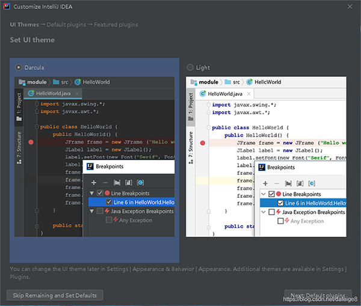

本次安装的 IntelliJ IDEA 版本：2020.2 (当前最新版本，2020.07.28发布的202.6397.94版)
官方推荐的安装条件（指当前你手里电脑的配置）如下：
1、64位版本的 wind 10、wind 8；(32位 win 10/8/7/xp 也有对应 32bit 版本，可能64位系统是主流的原因吧)
2、推荐8G的RAM，最小也得是2G的RAM；（RAM也就是电脑上内存条的大小，现在一般都是16G或32G）
3、2.5G的磁盘空间，最好是SSD（固态的）；（电脑上预留的ROM大小，也就是磁盘剩余空间，一般都足够用）
4、1024x768的屏幕分辨率；（除了老式屏幕，现在很难买到这么低的分辨率屏了）
说白了，以上配置，是基于能满足 IntelliJ IDEA 的最基本条件，也是官方推荐要给 IntelliJ IDEA 的基本分配；
一、找到 IntelliJ IDEA 的官网地址：https://www.jetbrains.com/idea/，下载安装包
二、有米的，可以选左边的收费旗舰版的，功能多（有30天免费体验期）；米少的，可以选择右边的免费社区版的，够用。点击下载，就可以了，此处以免费版为例（社区版，安装步骤，除了比，旗舰版，少了激活步骤外，其他都一样）
注意：Download 后面有个后缀可以选择（.exe：Install方式，表示需要一步步安装 /.zip：压缩包方式，表示不需要安装，解压后就可以用，相当于绿色版），此处以.exe为例安装。
三、找到下载好的安装包，双击开始安装
四、启动页面，直接点击下一步
五、选择安装的路径，我习惯安装到根路径下，然后下一步
六、选择安装前的配置
Create Desktop Shortcut：根据你的电脑选择对应的位数，我的是64位的；
Update context menu (Add "Open Folder as Project")：更新上下文菜单，即：有些菜单增删，会随之更新，默认不选；
Create Associations：创建关联文件，勾选哪一个，以后双击电脑上的 .java 文件就会用它打开，建议不勾选；
Download add install 32-bit JetBrains Runtime：下载添加安装32位JRE，专供IntelliJ IDEA内部使用，如果电脑没有安装配置JDK，可以勾选，否则，不建议勾选；
Update PATH variable (restart needed) Add launchers dir to the PATH：更新路径变量(需要重新启动)将launchers dir添加到路径，默认不选。
七、不用修改，直接点击 "Install" 开始安装
八、开始安装，如果网速好，很快OK
九、安装完，如果想打开IDEA运行项目，打勾（否则，不打勾），点 "Finish"。
十、初次，运行起来的样子，勾选 "我同意协议……"，点击 "Continue"
十一、问 "是否要匿名将数据回传给 JetBrains 公司"，根据自己习惯选择（传不传都不影响软件使用，只是帮助JetBrains进行关于软件使用的数据统计和崩溃报告采集）
十二、然后跳转到了使用主题、插件预装等页面，想快速的小伙伴，可以直接一路点击右下角的 "下一步"，因为这些都可以在软件的setting里进行设置和下载的

十三、旗舰版的在此停一下，社区办的可以跳过
到此，需要分说一下，如果你下载的是旗舰版的，接下来会多几个页面，首先会跳转到激活页面：分直接 激活账号 和 免费试用 两大项。
如果，选择 “Activate IntelliJ IDEA” ，即：直接 激活 IntelliJ IDEA 账号，并且有三种激活方式，分别是
1、Jet Brains 账号 激活；（IntelliJ IDEA 是 Jet Brains 公司的产品，好比，天猫是阿里巴巴公司的产品一样，所以，旗舰版 IntelliJ IDEA 版权需要用Jet Brains账号购买，如需要，官网注册个就OK了）
2、激活码激活；（如果你要是在强大的淘宝上买旗舰版的话，或者，别人给你买个，但账号不能给你，激活码给你就好了 ）
3、服务许可激活；（IntelliJ IDEA 官网有个免费许可计划，对于学生、学术人士；大学、学院等非盈利性机构；非商业性开源项目等一些列符合免费许可计划的人或团队提供免费许可服务，当然也是有一定要求的，想了解的可以官网了解：https://www.jetbrains.com/idea/buy/?fromIDE#discounts?billing=yearly）
如果，选择 “Evaluate for free”，即：免费试用，只需要评估一下，如果评估过了，就可以试用30天了
如果试用，点完 “Evaluate” 之后，就会跳转至首页了，即：下面第十四步了。
十四、一路"Next……"之后，最后就到了IntelliJ IDEA的真正首页面了，如果后期有项目，会直接跳转到，最后一次打开的项目里（当然也可以设置每次打开IDEA，都跳转到该页面），该页面可以创建新项目、打开已有项目、一些版本信息和右下角的设置/帮助等入口了
十五、最后，展示下 旗舰版 和 社区办 图标区别：
到此，IntelliJ IDEA 的安装算是告一段落，下面几篇文章会记录IntelliJ IDEA的设置、插件配置、立项等……